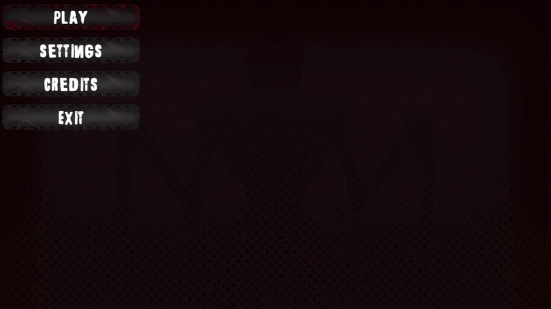

UI Systems & Menu Architecture
This section presents the complete UI framework I developed in Unity: animated menu panels, pause-state logic, quest display behavior, persistent audio and graphics settings, input-device detection, and gamepad icon data mapping.
Main Menu Manager
The MainMenuManager acts as the central orchestrator for the whole interface. It manages panel visibility, player control locking, cursor state, pause transitions, quest display timing, UI sound feedback, and scene loading.

Inspector setup showing panel references, RectTransforms, animation timings, quest texts, input actions and audio clips.
Core Responsibilities
Panel Routing
Controls the Main Menu, Settings, Pause, Quest and Credits panels from one central point, avoiding scattered button logic across the scene.
Gameplay Locking
When menus open, player scripts are disabled and the cursor is released. When the player returns to gameplay, controls are restored and the cursor is locked again.
Unscaled UI Timing
Panel movement and quest timers use realtime/unscaled time, so UI animation remains stable even when the game is paused with Time.timeScale = 0.
Audio Feedback
Dedicated methods trigger click, hover, slider and input-swap sounds, keeping button events clean and readable in the Inspector.
1. Reusable Panel Animation Coroutine
Instead of creating one animation method per panel, the manager uses a shared coroutine receiving a target RectTransform, start position, end position, duration and delay.
The motion is smoothed through Mathf.SmoothStep, which gives the UI a cleaner arrival than a raw linear interpolation.
private IEnumerator MovePanelRoutine(RectTransform panel, Vector2 startPos, Vector2 endPos, float duration, float delay)
{
if (panel == null) yield break;
panel.anchoredPosition = startPos;
yield return new WaitForSecondsRealtime(delay);
float elapsedTime = 0f;
while (elapsedTime < duration)
{
elapsedTime += Time.unscaledDeltaTime;
float t = Mathf.Clamp01(elapsedTime / duration);
t = Mathf.SmoothStep(0f, 1f, t);
panel.anchoredPosition = Vector2.Lerp(startPos, endPos, t);
yield return null;
}
panel.anchoredPosition = endPos;
}2. Cursor + Player Control State
The UI manager switches the project between two clear interaction modes: menu mode with visible cursor and disabled gameplay scripts, and play mode with locked cursor and active player controls.
This prevents unwanted player movement while navigating menus and keeps the virtual cursor synchronized with the real cursor state.

public void SetCursorsState(bool isVisible)
{
Cursor.lockState = isVisible ? CursorLockMode.None : CursorLockMode.Locked;
Cursor.visible = isVisible;
if (_virtualCursor != null)
{
_virtualCursor.SetActive(isVisible);
}
}
public void TogglePlayerControls(bool state)
{
foreach (MonoBehaviour script in _playerScripts)
{
if (script != null)
{
if (script is PlayerInput) continue;
script.enabled = state;
}
}
}3. Quest Panel: Temporary HUD vs Pause Visibility
The quest panel has two behaviors depending on the game state. During gameplay, it appears for a short amount of time and automatically hides. During pause, it is forced to stay visible so the player can read the objective without fighting a timer.
This is a small UX detail, but it makes the system feel intentional rather than purely mechanical.
private IEnumerator QuestTimerRoutine()
{
if (!_isQuestOpen)
{
_questPanel.SetActive(true);
_isQuestOpen = true;
yield return StartCoroutine(MovePanelRoutine(
_questPanelRect,
_startPositionQuestPanel,
_endPositionQuestPanel,
_animationDurationQuestPanel,
_startDelayQuestPanel));
}
yield return new WaitForSecondsRealtime(5f);
if (_isQuestOpen)
{
_isQuestOpen = false;
yield return StartCoroutine(MovePanelRoutine(
_questPanelRect,
_endPositionQuestPanel,
_startPositionQuestPanel,
_animationDurationQuestPanel * 2f,
0f));
}
}
Suggested GIF: quest panel appearing after Play/Continue, staying visible in pause, then hiding again in gameplay.
Settings Hub: Audio, Graphics, Inputs & Reset Logic
The Settings UI is split into specialized managers. This keeps each domain readable: audio handles mixer values, graphics handles resolution and post-processing, input handles sensitivity and control display, while the main menu exposes a global restore button.


Settings Architecture
| Manager | Handled Features | Persistence |
|---|---|---|
| AudioSettingsManager | Master, music, ambience, SFX, player, enemy and UI volume sliders. | Saved through PlayerPrefs using one key per mixer group. |
| GraphicsSettingsManager | Resolution, fullscreen, quality, VSync, gamma, black & white post-process toggle. | Saved through PlayerPrefs and reapplied on startup. |
| InputSettingsManager | Mouse/gamepad sensitivity, keyboard/gamepad panel switching, device detection. | Sensitivity saved in PlayerPrefs and pushed to the player controller. |
| MainMenuManager | Calls all reset functions from a single Restore All Settings button. | Centralized reset bridge. |
1. Audio Mixer Conversion
The audio sliders use normalized values from 0 to 1, but the Unity Audio Mixer expects decibels. The script converts slider values through Mathf.Log10(value) * 20 and clamps silence to -80 dB.
Each category also updates a percentage text, giving immediate visual feedback to the player.

private void SetMixerVolume(string parameterName, float normalizedValue)
{
if (audioMixer == null) return;
normalizedValue = Mathf.Clamp01(normalizedValue);
float volumeDb;
if (normalizedValue <= 0.0001f)
{
volumeDb = MinVolumeDb;
}
else
{
volumeDb = Mathf.Log10(normalizedValue) * 20f;
volumeDb = Mathf.Clamp(volumeDb, MinVolumeDb, MaxVolumeDb);
}
audioMixer.SetFloat(parameterName, volumeDb);
}2. Graphics Persistence & Safe UI Events
The graphics manager loads saved preferences at startup and applies them to Unity systems such as Screen.SetResolution, QualitySettings, VSync and HDRP volume overrides.
To avoid recursive dropdown/toggle callbacks while loading or resetting data, UI events are temporarily unregistered before values are written back.
private void RegisterUIEvents()
{
UnregisterUIEvents();
if (_vSyncToggle != null)
_vSyncToggle.onValueChanged.AddListener(ChangeVSync);
if (_qualityDropDown != null)
_qualityDropDown.onValueChanged.AddListener(delegate { ChangeQuality(); });
if (_blackAndWhiteToggle != null)
_blackAndWhiteToggle.onValueChanged.AddListener(ChangeBlackAndWhite);
if (_resDropDown != null)
_resDropDown.onValueChanged.AddListener(delegate { ChangeResolution(); });
if (_fullScreenToggle != null)
_fullScreenToggle.onValueChanged.AddListener(delegate { ChangeFullScreen(); });
}3. Global Restore Button
The reset system stays readable because the main manager does not manually modify every slider and toggle. It simply delegates to the three specialized managers.
This keeps responsibilities clean and makes it easy to extend later with accessibility, language, HUD scale or key rebinding settings.
public void RestoreAllSettings()
{
if (_graphicsManager != null)
_graphicsManager.ResetGraphicsSettings();
if (_audioManager != null)
_audioManager.ResetAudioSettings();
if (_inputManager != null)
_inputManager.ResetInputSettings();
Debug.Log("Tous les paramètres ont été réinitialisés par défaut !");
}Input UX: Automatic Keyboard / Gamepad Panel Switching
The input settings system improves usability by detecting the current device and automatically swapping between keyboard/mouse and gamepad panels. This prevents the settings screen from showing irrelevant control information.

Suggested GIF: move the mouse, then press a gamepad button, showing the panel flip animation.
1. Device Detection Only While Settings Are Open
The script checks for gamepad, keyboard and mouse activity only when the Settings panel is open. This avoids unnecessary processing and prevents accidental UI swaps during gameplay.
Gamepad detection uses stick magnitude and button checks, while keyboard and mouse detection use the new Input System device states.
private void Update()
{
if (_menuManager == null || !_menuManager.IsSettingsOpen) return;
if (Gamepad.current != null && Gamepad.current.wasUpdatedThisFrame)
{
if (Gamepad.current.leftStick.ReadValue().magnitude > 0.2f ||
Gamepad.current.rightStick.ReadValue().magnitude > 0.2f ||
AnyGamepadButtonPressed())
{
TriggerPanelSwitch(false);
return;
}
}
if (Keyboard.current != null && Keyboard.current.anyKey.wasPressedThisFrame)
{
TriggerPanelSwitch(true);
return;
}
if (Mouse.current != null && Mouse.current.delta.ReadValue().magnitude > 2.0f)
{
TriggerPanelSwitch(true);
}
}2. 3D Flip Transition
The active panel switches at the midpoint of a Y-axis rotation. At 90 degrees, the panel is visually edge-on, making the swap almost invisible and giving the settings UI a polished transition.
The animation uses Time.unscaledDeltaTime, making it safe during pause menus.
private IEnumerator FlipAnimation(bool targetIsKeyboard)
{
float halfDuration = _flipDuration / 2f;
float time = 0f;
while (time < halfDuration)
{
time += Time.unscaledDeltaTime;
float progress = time / halfDuration;
float angle = Mathf.Lerp(0f, 90f, Mathf.SmoothStep(0f, 1f, progress));
_flipContainer.localRotation = Quaternion.Euler(0f, angle, 0f);
yield return null;
}
_keyboardPanel.SetActive(targetIsKeyboard);
_gamepadPanel.SetActive(!targetIsKeyboard);
time = 0f;
while (time < halfDuration)
{
time += Time.unscaledDeltaTime;
float progress = time / halfDuration;
float angle = Mathf.Lerp(90f, 0f, Mathf.SmoothStep(0f, 1f, progress));
_flipContainer.localRotation = Quaternion.Euler(0f, angle, 0f);
yield return null;
}
_flipContainer.localRotation = Quaternion.identity;
}3. Sensitivity Slider Linked to Gameplay
Sensitivity is saved immediately and then pushed to the active player controller. This makes the settings feel responsive because the player can test changes right away after leaving the menu.
public void ChangeSensitivity(float value)
{
PlayerPrefs.SetFloat(SensKey, value);
PlayerPrefs.Save();
UpdateText(value);
SimplePlayerController player = FindFirstObjectByType<SimplePlayerController>();
if (player != null)
{
player.UpdateSensitivity(value);
}
}Gamepad Icon Data: ScriptableObject Mapping
The GamepadIconsData asset stores the relationship between Input System binding names and visual sprites. This makes button prompts data-driven instead of hardcoded in UI prefabs.
Suggested image: Inspector view of the ScriptableObject list mapping buttonSouth, buttonEast, triggers and shoulders to sprites.
Binding Path Cleanup
The Input System often returns paths such as <Gamepad>/buttonSouth. The data asset normalizes that string before comparing it against the configured icon list.
Because the comparison is case-insensitive, the setup is more tolerant to naming variations.
public Sprite GetIcon(string bindingPath)
{
string cleanedPath = bindingPath
.Replace("<Gamepad>/", "")
.Replace("<", "")
.Replace(">", "");
foreach (var icon in iconsList)
{
if (string.Equals(icon.bindingPathName, cleanedPath, StringComparison.OrdinalIgnoreCase))
{
return icon.iconSprite;
}
}
return null;
}Why this is useful
- Reusable: The same icon database can be used by tutorials, settings screens and interaction prompts.
- Artist-friendly: Icons are assigned in the Inspector without changing code.
- Scalable: Additional controller layouts can be added later by expanding the data asset or creating platform-specific variants.
Final UI Flow: From Main Menu to Gameplay
The complete UI system supports a clean player journey: start menu, settings configuration, credits sequence, transition into gameplay, temporary quest display, pause menu, and return to play.

Suggested GIF: one continuous capture showing the whole UI loop from boot to pause and back to gameplay.
Portfolio Summary
This UI system demonstrates more than simple menu buttons. It combines state management, Unity Input System integration, PlayerPrefs persistence, Audio Mixer control, HDRP post-processing settings, animated RectTransform transitions, UX timing, and data-driven gamepad prompt mapping.
The result is a modular and maintainable interface framework that can be expanded without rewriting the existing menu architecture.